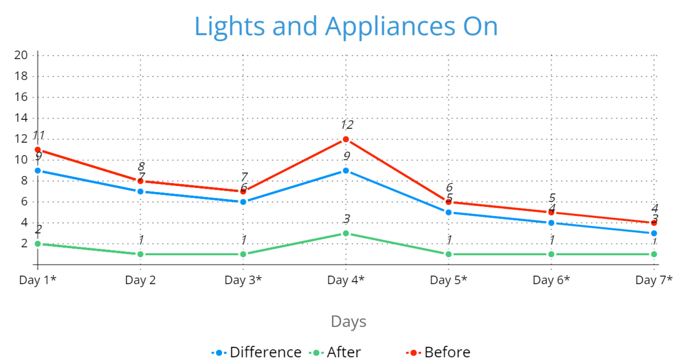

Turn Off Lights And Appliances When They Are Not In Use
What Benefits Does This Have?
Keeping lights and appliances not being used off has many benifits. The lower amount of electricity results in easier production of renewable energy, as they tippically produce less power, and creates more stable power source due to lower demand. It also can reduce noise and pollution in your home, and saves some money from being spent on power.
What Was The Experience Like Implementing This Strategy?
Every day, I started to count lights and appliances that were on and recorded that number in a table. Then, I switched off every light and appliance that was not in use, and recorded the number of lights and appliances in use in the table. This strategy was succesfully implemented.
Data
| Day 1* | Day 2* | Day 3 | Day 4 | Day 5 | Day 6 | Day 7 | |
|---|---|---|---|---|---|---|---|
| Before | 10 | 7 | |||||
| After | 4 | 5 | 3.75 | 4.5 | 3.75 |
*Before this strategy was implemented